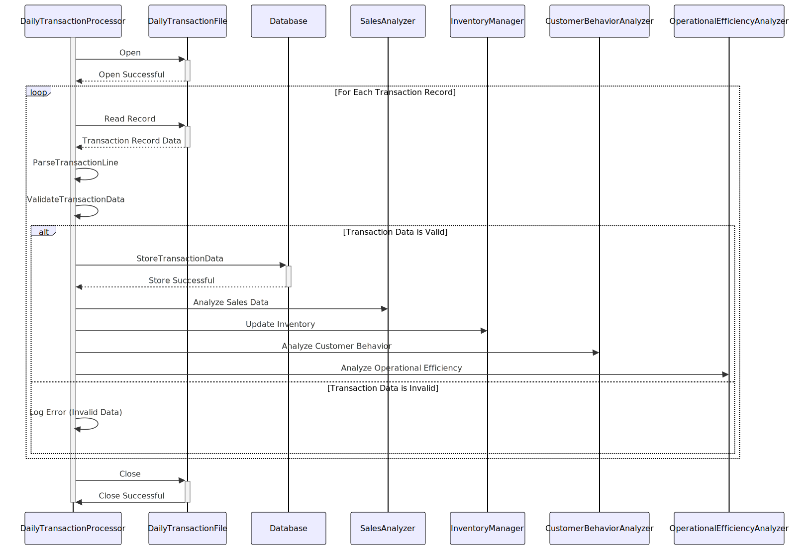

Gerado em: 1 de outubro de 2024
Título do Documento: Daily Transaction Processing System - Specification
Descrição Resumida: O Sistema de Processamento Diário de Transações foi projetado para processar logs de transações diárias geradas por terminais de ponto de venda (PDV) e operadores em várias lojas de varejo. O sistema analisa essas transações para acompanhamento de vendas, gerenciamento de estoque, análise de comportamento do cliente e melhorias na eficiência operacional.
Histórias do Usuário: Como analista de dados, preciso de um sistema para processar logs de transações diárias para que eu possa analisar tendências de vendas, gerenciar o estoque de forma eficaz, entender o comportamento do cliente e melhorar a eficiência operacional.
Épico Relacionado: 10 - Data Files Management
Requisitos Técnicos:
ProcessTransactionFile: Este método lê o arquivo de transação diária (dailytran.txt) e processa cada registro de transação.
dailytran.txt).ParseTransactionLine: Este método analisa uma única linha do arquivo de transação e extrai os dados da transação.
dailytran.txt.Transaction contendo os dados da transação extraídos.ValidateTransactionData: Este método valida os dados de transação extraídos em relação às regras definidas.
Transaction contendo os dados da transação extraídos.transactionType é Purchase ou Return.storeLocation em relação a uma lista mestre de locais de lojas.timestamp e garantir a ordem cronológica dentro do arquivo.customerInfo em relação a um banco de dados de clientes (se disponível).StoreTransactionData: Este método armazena dados de transação validados no banco de dados.
Transaction contendo os dados validados da transação.SalesTrackingAnalysis: Este método analisa dados de vendas e gera relatórios.
InventoryManagement: Este método atualiza os níveis de estoque e gera alertas de estoque.
CustomerBehaviorAnalysis: Este método analisa padrões de compra do cliente.
OperationalEfficiencyAnalysis: Este método analisa dados operacionais como horários de pico e tempos de processamento de transações.
Modelos Relacionados
Transaction: Representa um único registro de transação.
transactionType String: Tipo de transação (Purchase ou Return).storeName String: Nome do local da loja.storeAddress String: Endereço do local da loja.storeZipCode String: CEP do local da loja.timestamp DateTime: Data e hora da transação.customerId String (Opcional): Identificador exclusivo para o cliente (se disponível).productId String: Identificador exclusivo para o produto envolvido na transação.quantity Integer: Quantidade do produto envolvido na transação.price Decimal: Preço do produto.totalAmount Decimal: Valor total da transação.Configurações:
dailytran.txt: Caminho do arquivo do arquivo de transação diária.delimiter: Delimitador usado no arquivo dailytran.txt (por exemplo, espaço, vírgula, tabulação).dateFormat: Formato de data usado no campo timestamp do arquivo dailytran.txt.masterStoreLocations: Caminho do arquivo da lista mestre de locais de lojas.customerDatabase: String de conexão para o banco de dados do cliente.Melhorias de Código:
Melhorias de Segurança:
Diagrama Conceitual:
–Made by “Smart Engineering” (by Compass.UOL)–